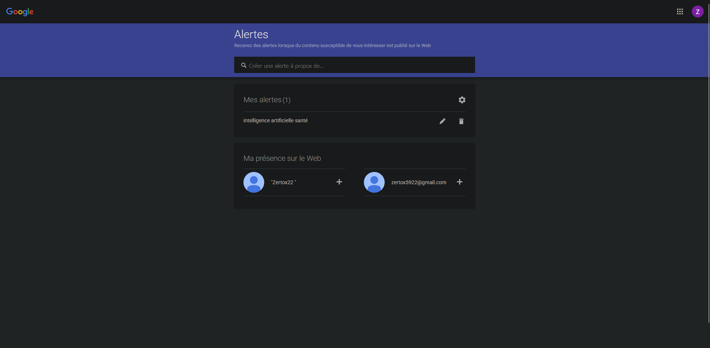
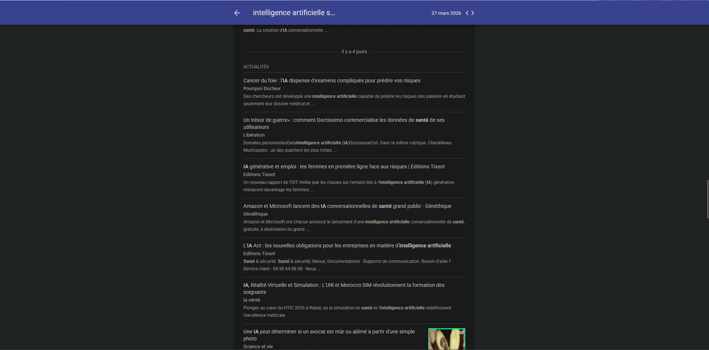
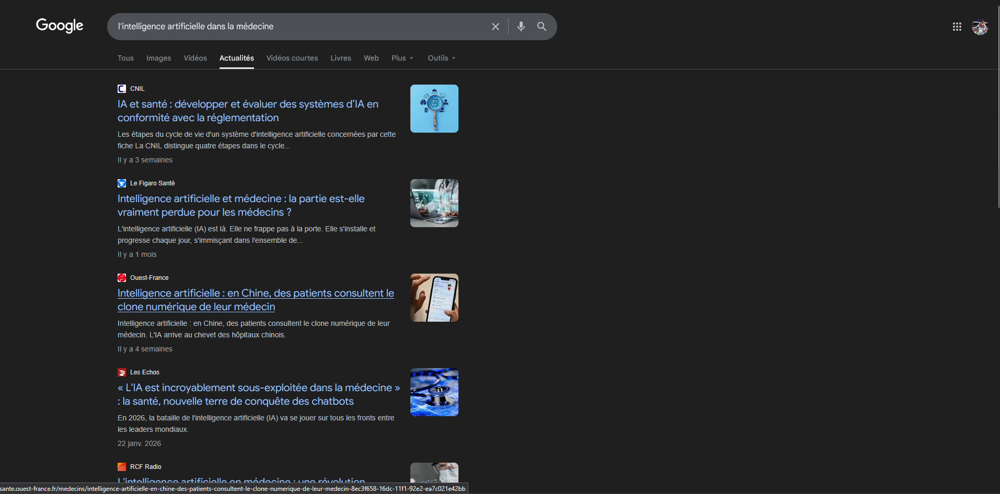
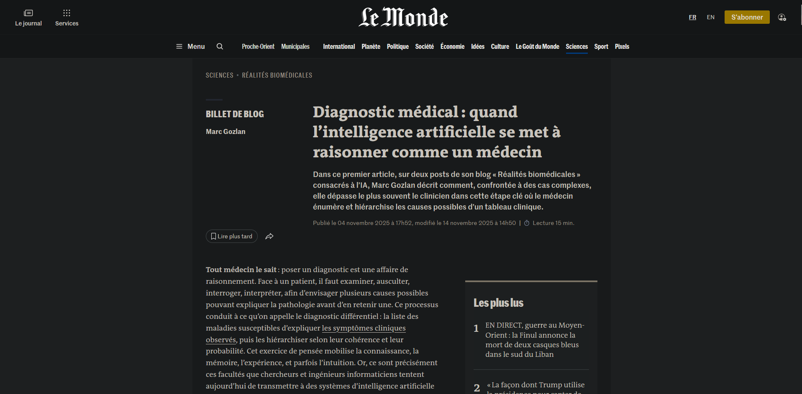

Analyse & Mise en place
1. Pourquoi ce thème ?
J’ai choisi ce sujet parce que l’intelligence artificielle est une technologie très actuelle et qu’elle est de plus en plus utilisée dans la médecine. Ça m’intéressait de voir comment l’informatique peut aider à améliorer les diagnostics ou le travail des médecins. En tant qu’étudiant en SLAM, ça me permet aussi de comprendre des applications concrètes du développement et du traitement des données. Et ça m’a permis de découvrir des enjeux importants comme la sécurité des données et les limites de l’IA. J'ai également choisi ce sujet car il me concerne très particulièrement personnellement et que je voulais m'intéresser à ce domaine là.
2. Mise en place — Google Alerts
Afin de me tenir informé automatiquement des dernières actualités sur l'IA en médecine, j'ai configuré des alertes Google (Google Alerts) avec des mots-clés ciblés. Voici les captures d'écran prouvant leur mise en place :

Configuration Google Alerts
Mots-clés ciblés : "intelligence artificielle", "santé", etc.

Résultats des Alertes
Exemple d'articles reçus automatiquement via Google Alerts.
3. Mise en place — Newsletters & Flux
En complément, j'ai personnellement recherché et suivi des articles publiés par des sources spécialisées et des newsletters médicales pour m'informer de l'actualité liée à ce thème.

Newsletters & Flux
Recherche sur internet et dans la partie actualités.

Exemple d'article reçu
Article venant du journal "Le Monde" qui nous parle de l'intelligence artificielle et de la médecine.
3. Mon avis personnel sur le sujet
Personnellement, je trouve que l’IA en médecine est très intéressante parce qu’elle peut vraiment aider les médecins, surtout pour les diagnostics. Mais je pense qu’il faut faire attention, notamment pour les données de santé et le fait que l’IA ne doit pas remplacer les médecins. Pour moi, ça doit rester un outil d’aide.